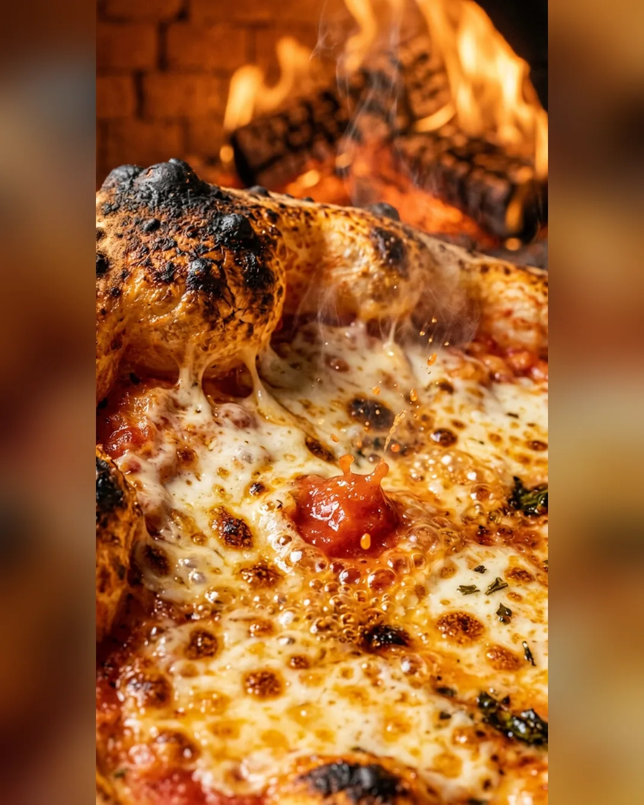
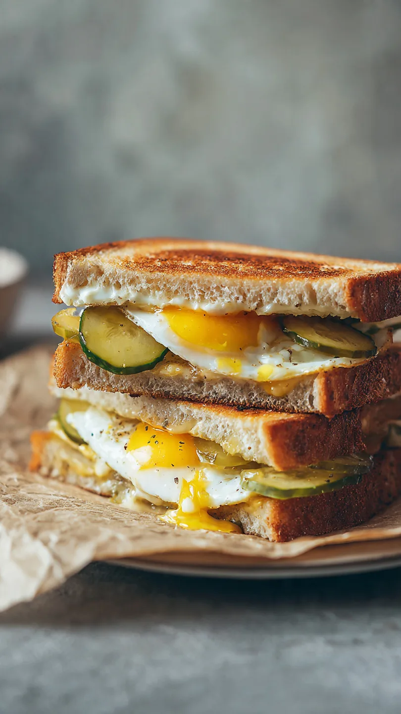
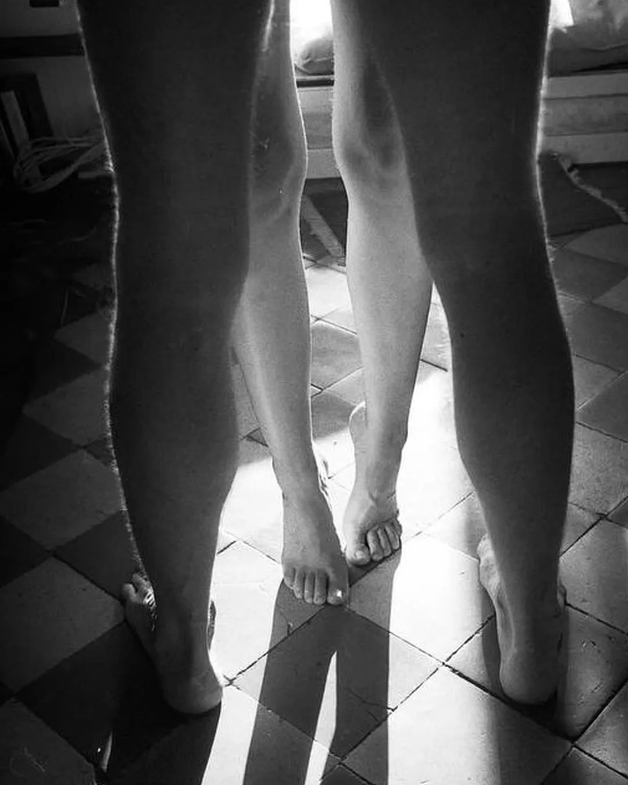

Advertising shots
Food and products up close. No film set is needed for such shots.
Services · AI images and video
Images and short videos made with generative AI: advertising shots, posters, illustration and series for social media.
Discuss a task ↗︎What is included
Food and products up close. No film set is needed for such shots.
Single images and series in one style for a site, covers and posts.
Clips for Instagram, Telegram and YouTube. We publish finished work in our own channels.
Examples



How we work
You tell us what you need and who it is for. We ask questions and suggest a solution.
You can open it and try it. It shows what is worth changing.
We complete the work, test it on phones and computers, and fix what you point out.
We publish the result and stay in touch after launch.
Other services
Discuss a project